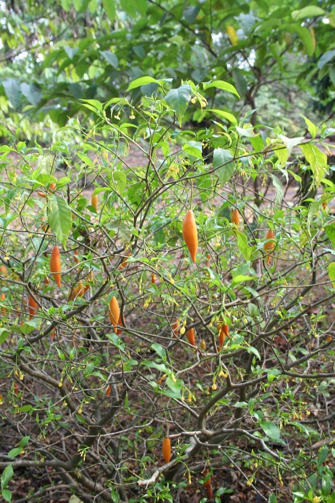
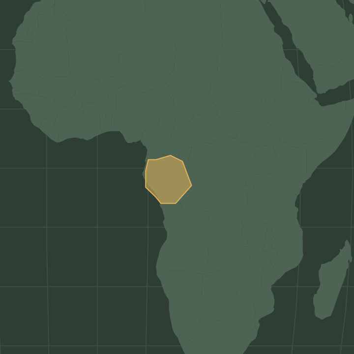

Planta · Apocináceas · Selvas de África central
Iboga
Tabernanthe iboga Baill.
Un arbusto de la selva de África central cuya corteza de raíz es, para el bwiti de Gabón, un sacramento de iniciación. Desde que un médico naval la llevó a Francia en 1864, sigue siendo una de las medicinas más delicadas.348
También se llamaiboga · raíz de iboga · árbol de iboga

- Qué es
- Arbusto siempre verde de la selva, con látex blanco
- Territorio
- Gabón y países vecinos de África central
- Parte usada
- La corteza de la raíz
- Principios activos
- Ibogaína y otros alcaloides indólicos
- Empieza y dura
- 1–3 h · 24–36 h, con efectos residuales
- Quién guarda su memoria
- Los pueblos fang y tsogho, en la tradición bwiti
Botánica
Un arbusto de frutos anaranjados bajo el dosel
Es un arbusto de selva, de hojas verdes y estrechas que suele medir unos dos metros. Con tiempo y buenas condiciones puede llegar a ser un arbolillo de hasta diez.1
Sus flores son tubulares, de color blanco amarillento o rosa, y dan paso a frutos alargados que maduran anaranjados y recuerdan a un chile.1
La parte que se usa es la raíz: su corteza concentra el alcaloide principal, tiene un sabor muy amargo y duerme la boca y la piel. La planta crece en suelo húmedo y a media sombra.1
- Familia
- Apocynaceae
- Porte
- Arbusto de 2 m, a veces arbolillo
- Flor
- Tubular, blanca amarillenta o rosa
- Fruto
- Alargado, anaranjado al madurar
Memoria y tradición
La raíz que une a los vivos con los antepasados
El bwiti es la tradición de iniciación de Gabón y de países vecinos en la que se toma la iboga. Se cuenta que el conocimiento de la raíz pasó de los pueblos pigmeos de la selva a los fang y a otros pueblos de Gabón.45
Las ceremonias suelen durar toda la noche y combinan música, trajes y ritos complejos. Para quienes las practican, la iboga se entiende ligada al mundo de los antepasados.67 National Geographic calcula que alrededor del cinco por ciento de la población de Gabón practica el bwiti.6
Los europeos la conocieron en el siglo XIX: en 1864 un médico de la marina francesa, Griffon du Bellay, llevó muestras a Francia.4 En 1962, Howard Lotsof, un joven con dependencia de la heroína, descubrió su efecto sobre la abstinencia, y desde entonces la ibogaína interesa a quienes investigan las adicciones.47
En el tiempo
Griffon du Bellay, médico de la marina francesa, recoge el primer informe europeo del uso de la raíz en Gabón y el Congo y lleva muestras a Francia.4
Henri Baillon describe el género Tabernanthe.2
Los fang de Gabón fundan una iglesia cristiana sincrética, el bwiti, que usa la iboga en sus ritos de iniciación.4
Dybowski y Landrin aíslan la ibogaína.4
Se comercializa en Francia el clorhidrato de ibogaína con el nombre de Lambarène.7
Howard Lotsof comunica que la ibogaína le quitó el deseo y la abstinencia de heroína.47
Se consigue la síntesis completa de la ibogaína.4
Sus nombres
- iboga
- del myene, lengua de Gabón
- bwiti
- nombre de la tradición de iniciación; la iboga es su sacramento
- fang
- uno de los pueblos de Gabón que la guardan
- tsogho
- otro pueblo de Gabón; National Geographic asocia el nombre a una palabra tsogho que significa «sanar».[6]
El nombre iboga procede del myene y pasó, con pequeñas variantes, a otras lenguas de la región.1
Territorio y cuidado
Una raíz que viaja lejos de la selva

Es originaria de las selvas de Gabón, la República Democrática del Congo y la República del Congo, y se cultiva en otros lugares de África central.1
Según National Geographic, buena parte de la ibogaína del mundo sale de plantas extraídas de Gabón, y las autoridades buscan una regulación de comercio justo y sostenible.6
Qué ayuda
- Respetar la iboga como sacramento del bwiti, no como producto de consumo.
- Preguntar por el origen de cualquier extracto o raíz antes de dar por buena su procedencia.
- Apoyar a las comunidades que la cuidan y su participación en cualquier comercio.
Qué contiene
Ibogaína, una molécula que toca muchos sistemas a la vez
La corteza de la raíz contiene ibogaína y varios alcaloides más; los alcaloides indólicos suponen en torno al seis por ciento de la raíz.13
La ibogaína no actúa como los psicodélicos clásicos: bloquea el receptor NMDA, actúa sobre receptores opioides y sobre el transportador de serotonina. El hígado la convierte en noribogaína, que permanece en el cuerpo varios días.8
 IbogaínaAlcaloide indólico · principal
IbogaínaAlcaloide indólico · principalBloquea canales de potasio del corazón (hERG), lo que alarga el intervalo QT y explica su riesgo cardíaco.[8]
La experiencia
Más de un día
Empieza a notarse entre una y tres horas después y se prolonga hasta un día o más, con efectos residuales de uno a tres días: cansancio, insomnio y sensibilidad a la luz y al ruido.78 La fase intensa, de unas cuatro a ocho horas, suele describirse como un sueño despierto, con recuerdos de la propia vida que pasan como una película.
Es una experiencia larga y exigente, nada recreativa, y por eso la persona necesita estar tumbada y acompañada de principio a fin.
Esquema orientativo: cambia con la preparación, la cantidad y la persona.
Investigación
Qué se ha estudiado
Un estudio observacional con seguimiento de doce meses en personas con dependencia de opioides vio menos abstinencia tras un solo tratamiento y menos consumo en los meses siguientes.10 Otra revisión de resultados de desintoxicación recoge efectos parecidos, junto con recaídas frecuentes.11
En 2024, un estudio sin grupo de comparación con veteranos con lesión cerebral traumática, tratados con magnesio e ibogaína, describió mejoras en sus síntomas.12
Alcance de estos datosSon estudios observacionales o sin grupo de comparación, hechos con supervisión médica. No hay ensayos con placebo que confirmen estos resultados, y no existe ningún medicamento con ibogaína ni con iboga.
Con cuidado
Lo que conviene saber antes
El corazón: la ibogaína alarga el intervalo QT y puede causar arritmias graves, también en los días posteriores.89
Electrocardiograma, análisis de potasio y magnesio y revisión de toda la medicación. La guía de APDER detalla quién no debería tomarla.8
Los medicamentos que alargan el QT suman su efecto sobre el corazón.8 En la guía hay una tabla de interacciones, con los opioides entre las más delicadas.
Para el bwiti es un sacramento. Conviene conocer ese contexto y tratarlo con respeto.6
Para seguir
Libros y medicinas emparentadas
 BwitiJames W. Fernandez · 1982En la biblioteca de APDER →Biblioteca de APDERIboga: The Visionary Root of African ShamanismIboga: The Visionary Root of African ShamanismVincent Ravalec, Mallendi y Agnès PaichelerEn la biblioteca de APDER →IbogaineKenneth R. Alper y Stanley D. Glick (eds.) · 2001En la biblioteca de APDER →
BwitiJames W. Fernandez · 1982En la biblioteca de APDER →Biblioteca de APDERIboga: The Visionary Root of African ShamanismIboga: The Visionary Root of African ShamanismVincent Ravalec, Mallendi y Agnès PaichelerEn la biblioteca de APDER →IbogaineKenneth R. Alper y Stanley D. Glick (eds.) · 2001En la biblioteca de APDER →El principio activo principal de la raíz.
PlantaVoacanga africanaVoacanga africanaOtra apocinácea africana que contiene ibogaína.
PlantaTabernaemontana undulataTabernaemontana undulataOtra planta de la misma familia con ibogaína.
PlantaTabernanthe ellipticaTabernanthe ellipticaLa otra especie reconocida del género, también africana.
Fuentes
De dónde sale cada dato
- Wikipedia. «Tabernanthe iboga». en.wikipedia.org (consultada el 24-11-2026).
- Revisión taxonómica del género Tabernanthe (Apocynaceae). Wageningen Agricultural University Papers 89-4; 1989. edepot.wur.nl.
- ICEERS. Iboga: Basic Info. iceers.org.
- Erowid. Ibogaine timeline. erowid.org.
- Wikipedia. «Ibogaine». en.wikipedia.org (consultada el 24-11-2026).
- National Geographic. This psychoactive plant could save lives—and everyone wants to cash in. nationalgeographic.com.
- Berkeley Center for the Science of Psychedelics. Ibogaine. psychedelics.berkeley.edu.
- Koenig X, Hilber K. The anti-addiction drug ibogaine and the heart: a delicate relation. Molecules. 2015;20(2):2208-2228.
- Alper KR, Stajić M, Gill JR. Fatalities temporally associated with the ingestion of ibogaine. J Forensic Sci. 2012;57(2):398-412.
- Noller GE, Frampton CM, Yazar-Klosinski B. Ibogaine treatment outcomes for opioid dependence from a twelve-month follow-up observational study. Am J Drug Alcohol Abuse. 2018;44(1):37-46.
- Brown TK, Alper K. Treatment of opioid use disorder with ibogaine: detoxification and drug use outcomes. Am J Drug Alcohol Abuse. 2018;44(1):24-36.
- Cherian KN, Keynan JN, Anker L, et al. Magnesium–ibogaine therapy in veterans with traumatic brain injuries. Nat Med. 2024;30(2):373-381.
- Iboga (Tabernanthe iboga) con sus frutos anaranjados. Marco Schmidt · CC BY-SA 2.5
- Mapa APDER, con datos de Natural Earth · dominio público
- Dibujos de moléculas APDER
Última revisión: 24 de noviembre de 2026. Si ves un error, escríbenos a info@apder.org.